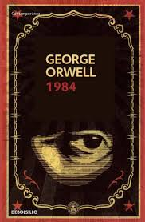
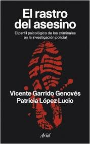
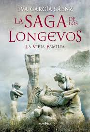

Cienca Ficcion
1984 (en su versión original en inglés: Nineteen Eighty-Four) es una novela política de ficción distópica, escrita por George Orwell entre 1947 y 1948 y publicada el 8 de junio de 1949. La novela popularizó los conceptos del omnipresente y vigilante Gran Hermano o Hermano Mayor.
Ir a la seccion Ciencia FiccionTerror

It es una novela de terror publicada en 1986 por el escritor estadounidense Stephen King. Cuenta la historia de un grupo de siete niños que son aterrorizados por un malvado monstruo que es capaz de cambiar de forma, alimentándose del terror que produce en sus víctimas.
Ir a la seccion terrorPoliciales
Este libro recoge la moderna técnica de la personalidad criminal y cómo la emplea la policía actual para capturar a los asesinos en serie. Lo más novedoso es que se aplica a los casos más relevantes del crimen reciente en España. Asistimos, así, a los testimonios y escenas del crimen de los asesinos.
Ir a la seccion PolicialesAventura
La saga de los longevos es una serie con rasgos históricos publicada en dos entregas: la vieja familia y Los hijos de Adán. El primer título significó un debut literario muy exitoso para la novelista Eva García Sáenz, descrito por la crítica como un fenómeno editorial que comenzó en medios digitales.
Ir a la seccion Aventuras